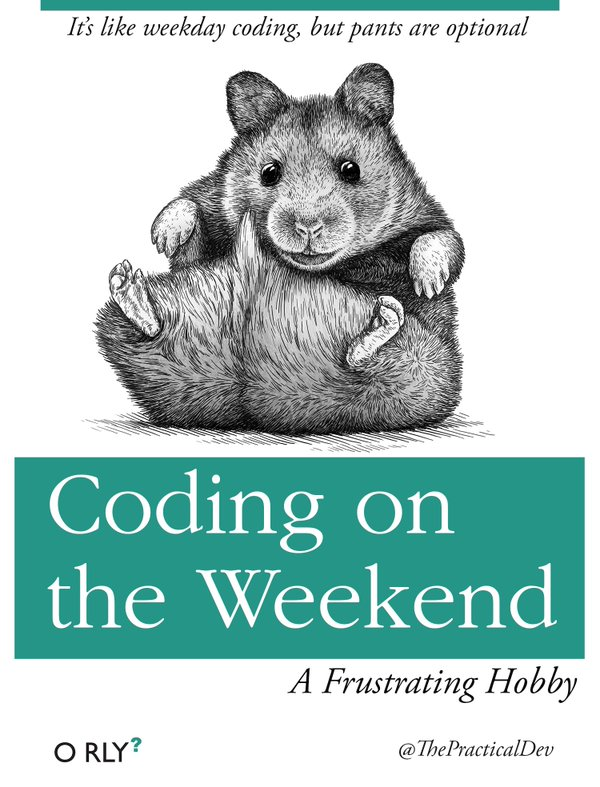

I’m taking a break from my coursera project while we prepare to move to a bigger flat and I’m generally busy settling into my role as a postdoc with new projects on top of the old. Nevertheless, a little fun with programming at home can’t be wrong, right?
knitr::include_graphics("weekend_coding.jpg")
Therefore, I thought it could be fun to weekly visualise my progress with the #SummerPain hashtag on twitter. #SummerPain was started by Helena just at the right time - I’d participated in #40LentPain before Easter, but then we were on holiday for a week (with no exercise) and I came back with strep throat, so I hadn’t exercised much since then. I hope that #SummerPain will help me get into the habit again, forcing me to find the time for workouts in my rather full schedule.
By the way, #SummerPain means 100 workouts this summer, starting May 14th, with September 15th as deadline, and a workout is defined as either 30 minutes of cardio or 15 minutes of strength training. I might not always adhere to these rules, though, but more on that in week one.